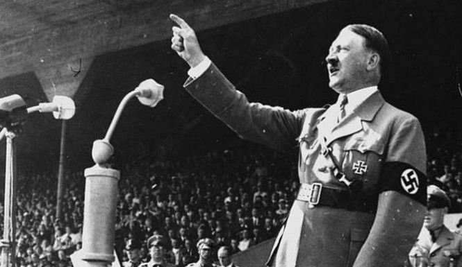
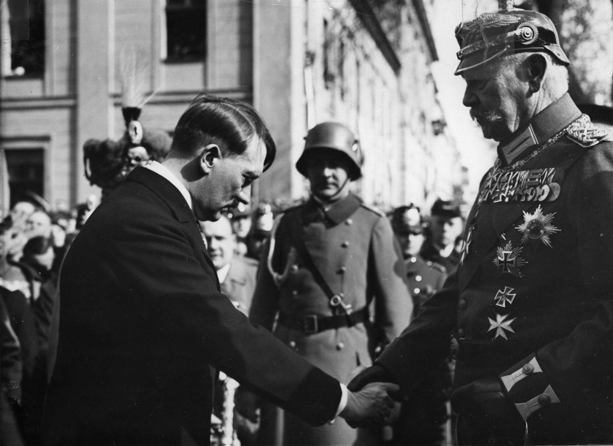

HITLERS VÄG TILL MAKTEN
Den nya demokratin som ersatte det tyska kejsardömet var ostablil. Under mellankrigstiden uppstod det svaga regeringar som avlöste varandra. Läget var osäkert och stora spänningar mellan olika grupper i samhället växte. Hitler försökte sig på en egen statskupp med sina anhängare 1923, men det misslyckades och Hitler hamnade i fängelse. Under sin tid i fängelse skrev han sin bok, Mein Kamf, där han bland annat skrev om sitt avskys mot demokratin och lika människovärde. Han skriver också att judar, kommunister, socialdemokrater och versaillesfreden var orsaken till Tysklands motgångar. När han blev fri bestämde han sig för att försöka ta makten på ett lagligt sätt, istället för olagligt.

Under 1920-talet blev Tysklands demokrati stabilare och ekonomi förbättrades. Hitler hade svårt att få fler anhängare under denna tid. I den tyske riksdagen 1928 hade Hitler bara 12 av 608 stolar. Men när den stora depressionen inträffade 1929 försämrades läget drastiskt i samhället. Många vände sig nu till vänster eller höger extrema partier i hopp på förbättring. Många affärsmän blev nu oroliga att kommunisterna tar över och hjälpa nazistpartiet genom att finansiera deras kampanjer. Nazistpartiet växte och växte och år 1932 blev de riksdagens största parti med 230 av 608 stolar.
Hitler fick i uppdrag att bilda regering, och gjorde det tillsammans med de konservativa. Hitler hade fortfarande inte all makt i sina händer. Han ställde upp i det tyska presidentvalet 1932, men förlorade mot den populära krigsgeneralen Hindenburg. Hitler som nu var ledare över det populäraste partiet krävde att få bli rikskansler, vilket presidenten Hindenburg inte ville, men gick tillslut med på det.

Trots att Hitler var Tysklands rikskansler, var han inte diktator än. Men i februari 1933 sattes det Tyska statshuset i lågor och Hitler skyllde på kommunisterna som ansvariga. I denna nödsituation övertalade Hitler presidenten Hindenburg att skriva under en speciell förordning som gav han rätt till att fängsla kommunistiska ledare och andra politiska motståndare. På så sätt säkrade Hitler sin makt över riksdagen och blev tillslut diktator över Tyskland.
Nästa Sida →